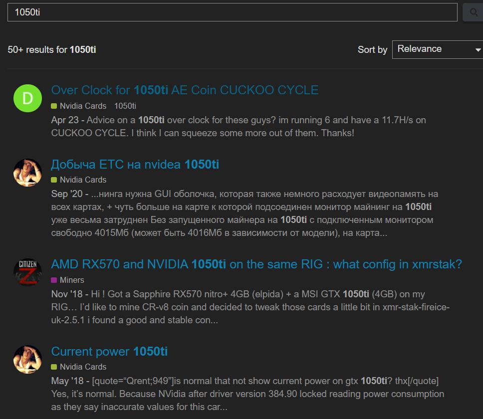

Các “điểm yếu” khi mining bằng 1050ti
1050ti có rất nhiều điểm yếu khiến cho các dân miner chuyên nghiệp thường dè chừng khi muốn đào bằng 1050ti
1.Hiệu năng trên từng watt điện khá thấp
Mỗi tiếng 1050ti sau khi ép xung vẫn còn ăn tới 68W nhưng hiệu năng đào thì chỉ 6.8Mh đối với RVn còn 15.6Mh nếu là ETC, thấp rất nhiều so với những dòng card khác.
Nếu bạn cân nhắc con Rx560 có lẽ sẽ khác nếu bạn có thể mod BIOS cho card, RX560 chỉ căn khoảng 60W nhưng cũng có thể đạt được 14.6Mh nhưng một dàn Rx560 rẻ hơn gần phân nửa 1050ti.
Phân khúc cao cấp thì có Rx6600XT ăn điện tương đương nhưng công lực gấp hơn 2 lần.
2.Nhiệt khá nóng!!
Nếu bạn không có máy lạnh thì khá vất vả cho bạn, vì những con 1050ti khi đặt gần nhau khá nóng, phải đặt xa xa một chút để nó đừng quá nóng. Nhiệt độ chỉ từ 65-68 độ nhưng nếu để nó chạy lâu dài thì khá cực.
Fan của tui lúc nào cũng tầm 90-10 vì buổi trưa nó có thể nóng hơn bình thường rất nhiều.
3.Cộng đồng 1050ti khá thấp
Thật ra thì cộng đồng không quá thấp nhưng nếu bạn muốn tìm những thứ như BIOS để mod cho 1050ti thì khá ít, và hiệu năng thì không cải thiện nhiều như khi mod mấy loại trâu khác.
Bạn muốn tìm các chỉ số overclock cũng khá ít, các chỉ số chủ yếu là RVN với ETC chiếm nhiều nhất, nó không nhiều các chỉ số như con Rx580, hay Rx560.